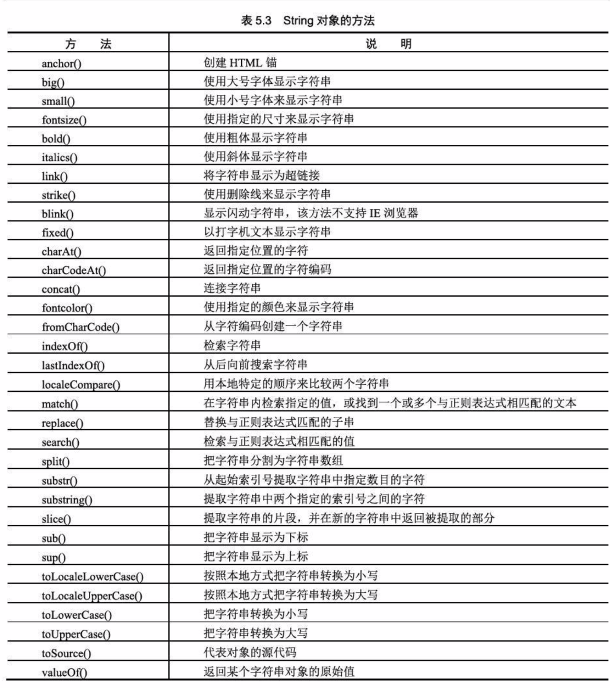

5.1、JavaScript内部对象
a.Object对象的创建：var obj = new Object('')
b.Object对象的属性：prototype、constructor
c.Object对象的方法：toLocaleString()、toString()、valueOf()
a.String对象的三个属性：length、prototype、constructor
length返回字符串的长度
constructor用于对当前对象的函数的引用
prototype属性可以为对象添加属性和方法
b.String对象的方法
事件处理函数与对象绑定：通过元素标记的一个属性，需要把event对象作为参数传递（onKeyUp='example(event)'）
1.动态创建FileSystemObject对象
5.2、对象访问语句
5.3、JavaScript中的数组
1.var arrayObj = new Array();
2.var arrayObj = new Array(3); 三个元素的数组
3.var arrayObj = new Array(1,2,3,"a","b"); 直接赋值的数组；